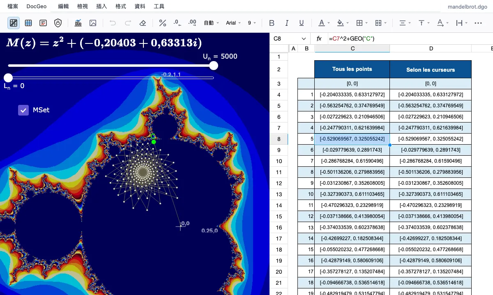

試算表
DocGeo 的分頁可以包含一張 DocCells 工作表（DocTools 的試算表）：放在圖形旁邊，或單獨放在自己的分頁中。圖形與儲存格即時互相讀取。

在上面的例子中，即曼德博集合：
-
B 欄計算 0 在 z ↦ z² + C 下的軌道，C 是圖形中的綠色點：B1 為
[0; 0]，B2 為=GEO("C")，B3 為=B2^2+GEO("C")，向下填滿到 B5000。由兩個數組成的列表像圖形中的點一樣計算，也就是像複數一樣計算； -
C 欄只保留在 A 欄中序號介於滑桿 Ln 與 Un 之間的項，滑桿透過
GEO("L_n")和GEO("U_n")讀取； -
圖形透過
c = !C1:C5000讀回這些項，並用d = 列表(c)把它們畫出來，以線段相連。
拖動 C 時，5000 個項會重新計算，折線在移動過程中隨之變化：只要 C 在集合內，它就保持有界；把 C 移出集合，它就會逃逸。
新增試算表
| 操作 | 方法 |
|---|---|
| 在圖形旁邊 | 檔案 › 檢視 › 新增試算表檢視：在右側多出一欄，含一張空白工作表；各欄寬度相同（多個檢視） |
| 在獨立分頁中 | 檔案 › 新增試算表分頁：一個只含一張工作表的分頁，名為「試算表1」「試算表2」……（活頁簿） |
| 調整大小、移動 | 拖曳欄之間的分隔線；試算表檢視處於作用中時，用檔案 › 檢視 › 視圖左移或視圖右移 |
| 刪除 | 檔案 › 檢視 › 刪除試算表檢視：檢視及其儲存格消失，圖形收回空間。試算表分頁的刪除方式與其他分頁相同。 |
- 一個分頁最多有一個試算表檢視：已有一個時，新增試算表檢視會呈灰色。
- 試算表檢視只顯示一張工作表，沒有工作表標籤。要使用多張工作表，就建立多個試算表分頁，它們可以互相讀取（見下文）。
- 新增或刪除試算表檢視可以復原，和其他檢視操作一樣。
試算表的選單和按鈕
在儲存格中按一下或按鍵，試算表檢視即成為作用中的檢視。DocGeo 的工具列隨即讓位給試算表的工具列，高度不變：下方沒有任何移動。
- 選單列保留檔案，其後是DocGeo選單，然後是試算表的選單。
- 試算表的按鈕列（數字格式、字型、粗體、色彩、框線、對齊……）取代 DocGeo 的操作列。
- DocGeo選單提供仍然有用的功能：作圖歷程、工具面板、屬性和使用手冊。
- 按一下圖形或「作圖」面板、在其中輸入一行，或切換分頁，即可回到 DocGeo 的工具列。在試算表分頁中，試算表的工具列保持不變。
- 試算表的對話方塊（條件式格式設定、數字格式……）在關閉之前會為整個 DocGeo 視窗罩上遮罩。
在試算表分頁中，「作圖」面板仍然可用（DocGeo › 作圖歷程）：在其中輸入的物件會被計算但不繪製，該分頁的儲存格可以讀取它。
DocGeo 嵌入到其他頁面（例如 DocTools）時沒有選單列：試算表的工具列保留在其欄的頂端。
圖形讀取儲存格
圖形中的公式以驚嘆號加儲存格位址來指定本分頁試算表檢視中的儲存格：!B3。
| 寫法 | 值 |
|---|---|
!B3 |
儲存格 B3 |
!B2:B21 |
一列或一欄的範圍：值的清單 |
!A1:C3 |
矩形範圍：列的清單，每一列是一個清單 |
試算表1!B3 |
試算表分頁中的儲存格 B3 |
'圖形 1'!!B3 |
另一個分頁試算表檢視中的儲存格 B3 |
A = (!B1, !B2)
r = !B3
L = !A1:A10-
位址先寫大寫字母再寫數字（
B3、AA12），不加$，緊接在驚嘆號之後。名為 A1 的物件的否定寫作!(A1)。 -
數字、文字、布林值或清單按原樣讀取；日期讀作數字。儲存格可以包含以方括號輸入的清單
[2, 1]，或計算得到的清單：=[2, 1]*3。空白或錯誤的儲存格（#DIV/0!……）給出未定義的值：讀取它的物件不繪製。 - 儲存格一旦改變（無論是輸入還是試算表的計算），讀取它的物件就會重新計算並重繪。
- 參照只是公式的一部分：它不建立任何物件。從儲存格讀取的點（如上面的 A）是計算出來的：不能用滑鼠拖曳。要移動它，就修改儲存格。
另一個分頁的儲存格
先寫分頁名稱，若含空格或符號則加單引號，與讀取另一個分頁相同：試算表1!B3。如果該分頁還有圖形，就把驚嘆號寫兩次：'圖形 1'!!B3，因為'圖形 1'!B3指的是其圖形中的物件 B3。其儲存格按離開該分頁時的計算結果讀取。
儲存格讀取圖形：GEO
在儲存格中，函數GEO讀取圖形中某個物件的值，物件名稱寫在引號中。
=GEO("c")
=GEO("'圖形 1'!c")
=2*GEO("r")+1- 該值就是圖形中的公式透過物件名稱讀取到的值：線段的長度、運算式或滑桿的值、文字、核取方塊的狀態……操作圖形時，它隨之變化。
-
點讀作其座標的清單：
=GEO("A")給出[1, 2]，可以像清單一樣參與計算：=GEO("A")*2。 -
未知或未定義的物件，或既非數字、也非文字、也非布林值、也非點、也非清單的物件，給出
#N/A。名稱必須寫在公式中：=GEO(A1)給出#VALUE!。 -
GEO("'圖形 1'!c")讀取另一個分頁中的物件 c：試算表分頁就是這樣讀取圖形的。 -
GEO在所有語言中名稱相同。它只存在於 DocGeo 中：在單獨的 DocCells 中，它給出#N/A。
循環參照
被GEO讀取的物件不能依賴於依賴它的儲存格。如果A1包含=GEO("m")+1，用m = !A1這一行重新定義 m 會被拒絕：「循環參照：!A1」。
同樣，會與圖形形成循環的儲存格公式會以此訊息被取消，儲存格恢復先前的內容。若檔案中仍含有循環，閉合循環的那次讀取為未定義。
復原與儲存
- 儲存格有自己的復原：在儲存格中按Ctrl Z，或使用試算表的選單。DocGeo 的 按鈕不會復原試算表中的輸入。
-
儲存格、公式及其格式與圖形一起儲存在同一個
.dgo檔案中。在儲存格中按Ctrl S，或用檔案 › 儲存，即可全部儲存。
給學生
DocGeo 的閱讀器與嵌入網頁的圖形一樣，顯示工作表時不帶選單和按鈕，但保留公式列。
- 學生可以像在輸入欄位中一樣在儲存格中輸入：圖形隨之變化。
- 重設按鈕會把儲存格還原為儲存時的樣子。
- 這些輸入不屬於嵌入該圖形的頁面所保存的學生答案：只有圖形中的物件才屬於。
試算表是一個獨立的應用程式，只有當顯示的分頁含有試算表時才會載入。在自行架設
DocGeo 副本的網站上，doccells資料夾必須發布在
DocGeo 資料夾旁邊；否則試算表檢視顯示「⚠
DocCells」，圖形的其餘部分正常運作。